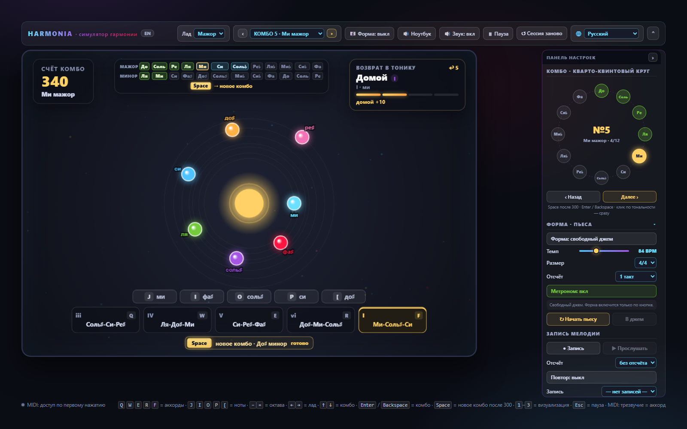

Harmony simulator · circle of fifths · free
HARMONIA — a harmony simulator you play like an instrument
Twenty-four major and minor combos travel the circle of fifths. Your left hand plays chord functions, your right hand plays melody notes that always fit, and seven orbiting balls show the seven degrees of the mode. Nothing to install: it runs in the browser, and a MIDI keyboard is heard as a real instrument.
Open the simulator Source on GitHub
Free, no sign-up, no installation. Computer keyboard works out of the box.

What HARMONIA is
HARMONIA is a free browser-based harmony simulator for anyone who wants to practise chord progressions instead of reading about them. The whole game is built around the circle of fifths: twenty-four combos — twelve major and twelve minor — walk the circle, and each combo has a tonic, a subdominant, a dominant and a tonic again.
The left hand plays the harmonic functions. The right hand plays melody notes, and it does not simply map five keys to five fixed pitches: the five note keys open a safe window of five degrees around the sounding chord, so an improvised line rarely collides with the harmony. Seven balls — one per degree of the mode — carry the colour of their function and the height of their pitch, so the picture on the stage is honest: the ball cannot travel to a place the interval maths does not describe.
There is no build step, no framework and no external dependency. The simulator is plain HTML, CSS and JavaScript, so it also runs from a local file without a server.
How a combo works
A combo is one trip through a key: tonic, subdominant, dominant, tonic. Playing a chord
change earns points by function (tonic, subdominant, dominant), by common tones, by root
motion and by how the leading tone resolves, so ii → V → I is rewarded as a
prepared authentic cadence, IV → I as a plagal one and V → vi as
a deceptive turn. Repeating the same pair gradually pays less.
At 300 points the Space button starts pulsing under the chord cards, and a short line next to the score changes from “300 more” to “Space → next combo”, so nobody has to guess how the combo ends. Press it — or Space — and the combo advances without a single modal window: major hands over to the minor of the same pair, minor hands over to the major of the next pair. The modes alternate, the score of the new combo starts from zero, and the circle of fifths keeps turning. Enter and Backspace walk the same route by hand. The musical name of the current key (C major, F♯ minor…) sits right under the score, so the stage never hides which combo you are playing.
What you can do
Practise functions, not shapes
Five chord keys cover the supertonic, subdominant, dominant, submediant and tonic, in major and in minor.
Improvise with a safety net
The right hand offers five degrees that fit the current chord; switch the smart mode off to get five fixed roots instead.
Play a MIDI keyboard
Every note keeps its pitch, octave and velocity. A held triad is recognised as a scale degree or as a colour outside the key.
Sustain with a pedal
CC64 holds released notes and keeps them in the recognition pool; CC123 is the panic button. Tails fade faster under the pedal so it never turns to mush.
Record and listen back
Chords and notes are recorded with timing and stored in the browser. Count-in of zero, one or two bars, and a loop toggle for playback.
Play a 16-bar form
An optional piece with intro, A, B, A′ and coda, soft targets for every bar and a result screen with a breakdown by section.
Three visualisations
Orbits, spectrum and circle. The circle draws the chord as a triangle on the belt of tones, with common tones marked as voice-leading anchors.
Tune the sound
Reverb, trail decay, idle speed, note octave, metronome and tempo live in a panel that does not steal space from the stage when it is closed.
How to play
- The start screen asks you to press ten highlighted keys: Q W E R F for the left hand and J I O P [ for the right one. Each key answers with a sound; a repeat is not counted. You can also click the keyboard picture, so the entrance works on a tablet.
- When the counter reaches 10 / 10, the Space key lights up. Press Space and the session begins — the same gesture that opens a new combo in the game.
- Play chord changes with the left hand and add melody notes with the right one. The score of the current combo grows with every meaningful harmonic turn.
- At 300 points press Space to move on: the mode flips and the circle of fifths takes you to the next key.
| Start: ten highlighted keys, then Space | Q W E R F + J I O P [ → Space |
|---|---|
| Left hand: supertonic, subdominant, dominant, submediant, tonic | Q W E R F |
| Right hand: five melody notes around the chord | J I O P [ |
| Melody octave up / down | = / − |
| Next / previous combo | Enter / Backspace or ↑ / ↓ |
| New combo after 300 points | Space |
| Mode: major / minor | ← / → |
| Visualisation: orbits, spectrum, circle | 1 2 3 |
| Pause, mute, clear trail, restart the session | Esc M C 0 |
Note names follow the interface language: C-D-E in English and do-re-mi in Russian, with a manual switch in Sound → Notation. The colour, radius and degree number carry the same information in either notation.
A MIDI keyboard is the ears, not five buttons
Connect a controller and every key becomes a real note: its own pitch in any octave, its own
velocity. About 70 ms after the last change, held notes are folded into a triad and the
simulator names it — a degree of the mode, a secondary dominant such as V/ii,
or a colour outside the key. There is no “this key equals this chord” table, so the same
hardware behaves like an instrument rather than a remote control.
The sustain pedal (CC64) keeps released notes sounding and inside the recognition pool; CC123 is the panic button. Web MIDI is available in Chrome and Edge; in other browsers the computer keyboard still plays everything.
Optional layers: a 16-bar form and melody recording
A free jam is the default mode: no metronome, no count-in, no bar targets. Turn the form on and the same game becomes a 16-bar piece — intro (2 bars), A (4), B (4), A′ (4) and a coda (2) — at 84 BPM, in 4/4 or 3/4. Every bar suggests a degree of the current mode as a soft target; hitting it adds points and lights the bar, missing it breaks nothing. Because targets are degrees rather than fixed chords, a mode or combo change in the middle of the piece stays correct. Esc pauses the clock and the game together, and after the last bar a result screen breaks the run down by section.
Recording
The recording panel keeps chords and notes with their timing, offers a count-in of zero, one
or two bars, and plays everything back through the same synthesiser without touching the
score. Saved melodies live in localStorage and survive a reload; recording stops
by itself after three minutes or 6 000 events so the storage never overflows.
Interface language
The simulator is written in Russian, and the language list in the top menu switches the interface to any language Google Translate supports. The widget is loaded only when you pick a language, never on page load, and it is disabled on local files — so the page a search engine sees stays a single, stable Russian document.
Musical symbols are deliberately left alone: solfège names, degree numbers, chord symbols, key labels and the circle of fifths are language-independent and keep their exact meaning in every translation. This page is the English entry point; the Russian version is the canonical one.
Questions
Is HARMONIA free?
Yes. It is a free browser game with no sign-up, no installation and no paywall. The source code is on GitHub under the MIT licence.
Do I need a MIDI keyboard?
No. The computer keyboard plays everything: Q W E R F for the left-hand chords and J I O P [ for the right-hand notes. A MIDI keyboard is optional, but it is heard as a real instrument — every note keeps its own pitch, velocity and octave.
Which browsers are supported?
Any modern browser with Canvas 2D and Web Audio: Chrome, Edge, Firefox or Safari. Web MIDI input works in Chrome and Edge; without MIDI the computer keyboard still plays the whole game.
Can I play it without an internet connection?
Yes. The simulator is plain HTML, CSS and JavaScript with no dependencies, so it works from a local file on your own computer. Only the optional interface translation needs a network connection.
Where are my recordings stored?
In your browser. Saved melodies live in localStorage and never leave your device. The only outside requests are the optional Google Translate widget and anonymous Yandex Metrika visit statistics.
Is it a course or a game?
Closer to a trainer you can play. There are no lessons to read: the point system rewards functional harmony, so the habits that produce cadences are the ones that produce points.